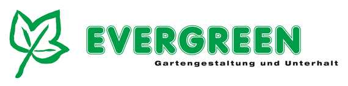
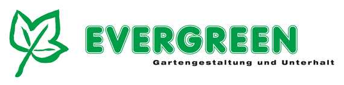
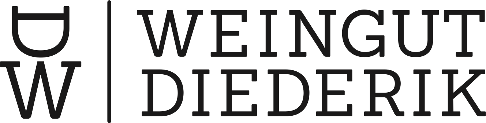
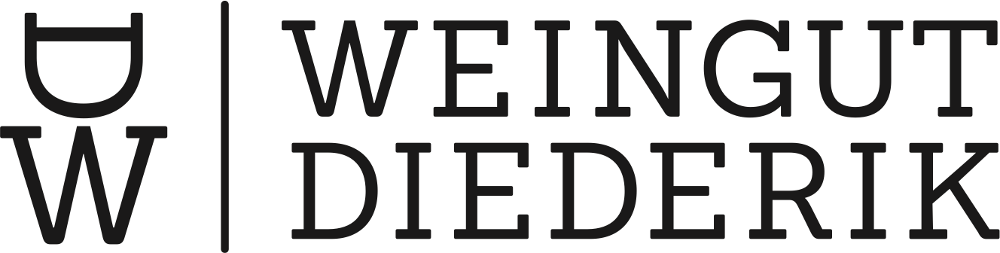

Tickets & Info
Am Freitag, 3. September 2021 werden Filme, die in diesem Sommer extra für die Küsnachter Kulturnacht produziert worden sind, im reformierten Kirchgemeindehaus gezeigt.
Für die öffentlichen Filmvorführungen bitte Tickets bei Eventfrog über folgenden Link buchen:
Der Eintritt ist frei.
Die Filmvorführungen beginnen um 18 Uhr, 19.30 Uhr und 21 Uhr und dauern 60 Minuten. Es werden jeweils drei bis vier unterschiedliche Filme gezeigt. Der Zürcher Slam Poet Simon Chen moderiert die Vorführungen.
Möchten Sie vor oder nach der Vorführung einen kleinen Imbiss geniessen? „Meerzyt“ bietet Fleisch und Vegetarisches vom Grill.
Die zum Zeitpunkt des Anlasses geltenden Covid-19 Vorgaben werden eingehalten.
Presse

Kontakt

Ein Ziel: Kulturnacht Küsnacht 2021on air

Die Kulturnacht wird auch unter neuen Umständen gestemmt
Fotos: Petra Helm
Die Kulturnacht Küsnacht ist ein Projekt der Kulturellen Vereinigung Küsnacht (KVK) und wird von einem Nonprofit-Team organisiert:
- Elisabeth Abgottspon, Ortsmuseum Küsnacht
- Ilka Allenspach, Kulturelle Vereinigung Küsnacht
- Hans-Peter Fehr, Theaterverein „Die Kulisse“, Küsnacht
- Christian Marty, Konservator/Restaurator, Küsnacht
- Martine Peyer, Kulturelle Vereinigung Küsnacht
- Hortensia Ernst, Vertretung Vorstand Kulturelle Vereinigung Küsnacht
- Esther Haltiner, Vertretung Vorstand Kulturelle Vereinigung Küsnacht
Durch eine Mitgliedschaft unterstützen Sie die Aktivitäten der KVK. E-Mail an: vorstand@kulturelle-vereinigung-kuesnacht.ch
Sponsoren
Goldsponsoren

Silbersponsoren
 

 

Bronzesponsoren
Küsnacht
Küsnacht
Küsnacht
Gönner

Medienpartner